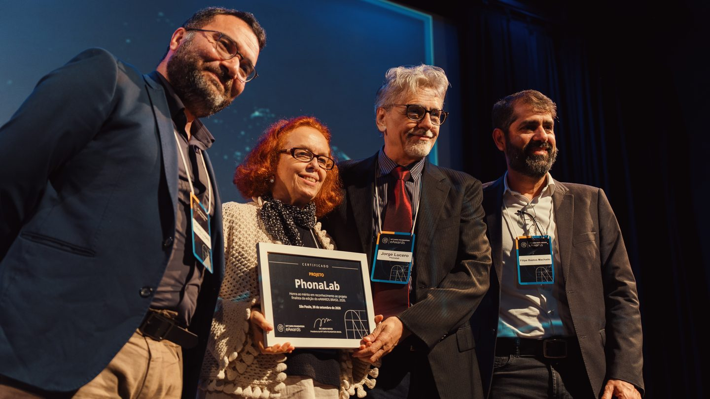

Professor of Computer Science, University of Brasília
lucero@unb.br
ORCID: 0000-0003-0597-3808
My research is on the physics of voice production: how airflow, tissue mechanics, and acoustics interact to create the human voice. Over three decades it has centered on the biomechanics and acoustics of phonation — vocal fold oscillation dynamics, phonation threshold pressure, source-tract acoustic coupling, and speech articulatory patterns. Current work addresses the acoustic correlates of perceptual voice quality dimensions and the controlled simulation of voice disorder mechanisms.
Alongside the modelling, the work has moved toward tools that put research-grade analysis in the hands of clinicians: PhonaLab, a web platform for acoustic voice analysis used by 3,700+ clinicians and researchers in 80+ countries; SimuVox, a physics-based voice synthesizer for simulating disordered voice quality; and Acoustic Measures of Voice Quality, an open reference on the measures themselves, where every published value is tied to the software, settings and task that produced it.

Web-based acoustic voice analysis for speech-language pathologists. Implements validated multiparametric indices (AVQI, ABI, CSID, CPPS, GNE) via Parselmouth/Praat. Features include Voice Analyzer, Pitch Visualizer, Spectrogram Generator, Spectral Analysis, and Session Compare. No installation, no audio storage, works in the browser.
3,700+ users · 80+ countries · 10,000+ analyses · Peer-reviewed in Journal of Voice (2026)
Physics-based voice synthesis software. Models vocal fold vibration, glottal aerodynamics, and acoustic propagation in a 44-tube vocal tract. Used for research on disordered voice production and perceptual assessment training.
Awards: SBFa 2013, 2015, 2016, 2020 · Voice Foundation Brazil 2017, 2021
An open, living reference on the acoustic measures used to assess the voice, written for speech-language pathologists and voice scientists. Every reference value is published with the pipeline that produced it — software, version, settings, speech task and language — and where no compatible reference exists, the absence is declared rather than filled with a borrowed number.
Text CC BY 4.0 · code MIT · versioned DOIs on Zenodo · 10.5281/zenodo.22739049
Current course: discrete mathematics